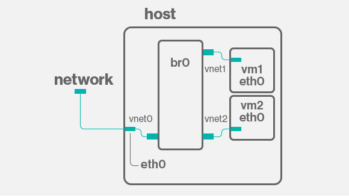
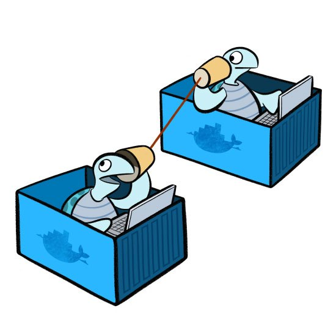
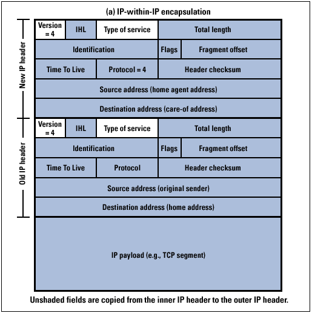

# Networking Brain Dump ### Episode 8: SDN --- # Last time on NBD... - DNS - How google.com becomes 172.217.6.46 - Finished TCP/IP suite --- # The cloud era - VMs present unique challenges - We considered 1 host : 1 MAC : 1 IP - Many VMs per host - Each VM wants an IP - VMs are transient and mobile - Network needs virtualization --- # Before SDNs: VLAN (802.1Q) (circa 2000) <img src="vlan.jpg" width="600px"> --- # Software switches - Recall that a switch: - Learns by flooding - Maitains forwarding database - Easy to do in software - Usually done in the kernel --- # Linux's switches - "Native" bridge - OpenVSwitch - Both can also do L3 --- # Virtual bridging  --- # Virtual bridging - Pros: - Straightforward setup - Low overhead - VMs are on "native" network - Cons: - Large broadcast domain - Impacts the rest of the network - Not multi-tenant friendly --- # Virtual bridging variant - MACVLAN - Assign multiple MACs to a NIC --- # Virtual routing - Linux bridge can be given an IP (make it a GW) - Linux kernel does the routing and NAT --- # Docker Example  --- # Docker Example <img src="docker-net.png" width="600px"> --- # Docker Example - Container net on each host - Routed through the host with IP Masq to outside --- # Overlay networks - A layer of indirection - Mesh of point-to-point tunnels --- # Tunneling - Take a packet with it's headers - Starting with MAC or IP - Put it as payload of another packet - Payload of MAC/IP/UDP --- # Example: IPIP tunneling  --- # Lots of tunnels - IPIP - SIT - GRE - NVGRE - VXLAN --- # Mesh networking - For each cluster member - Create a tunnel to all other members - That's the data plane - The challenge is management (members change!) - Control plane --- # VXLAN - Very popular today - Wraps L2 in L4 (UDP) - Hash its own header - Contains 24-bit VNID (tenant ID) - High overhead --- # VXLAN <img src="vxlan.jpg" width="600px"> --- # Overlay networks - Easier and harder to manage - Size overhead (reduced MTU) - Control plane is crucial --- # Overlay network systems - Weave - Calico - flannel - OpenContrail - OpenStack - Docker --- # Overlay network control plane - Database - Cassandra - Zookeeper - etcd - Consul - MySQL - Gossip protocols - Seeded with a peer - Agent on each host --- # Thank you for listening <img src="thats-all.jpg" width="600px">